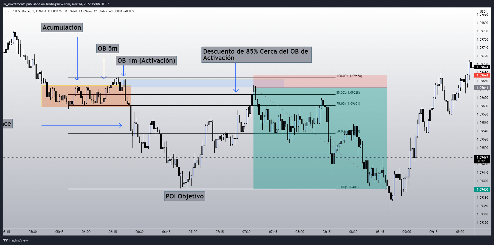

< >
Estos símbolos son los más relevantes del lenguage, ya que establecen las etiquetas, para escribirlas dento de un documento html sin que se
detecte como una etiqueta, se deben poner las letras (& l t) todo pegado para el símbolo < y (& g t) todo pegado para el símbolo >
- < h1 > Texto < / h1> , representa una etiqueta, este tipo de etiqueta se denomína cerrada. Para este caso las estiquetas con hi corresponden a niveles de títulos,
entre mayor sera i, menor será el tamaño del título:
Encabezado h1
Encabezado h2
Encabezado h3
Encabezado h4
Encabezado h5
Encabezado h6
Si se establecen valores de i mayores a 6, no tendrá ningún efecto sobre el texto.
- Para resaltar un texto se utilizan varias etiquetas:
- < strong >: Restaltar y enfatizar en negrita
- < bold >: Restaltar en negrita
- < i >: Restaltar en itálica
- < em >:Resaltar y enfatizar en itálica
- Regla horizontal:
< hr >: NO NECESITA ETIQUETA DE CIERRE
- Atributos en las etiquetas: < etiqueta atributos >, ejemplo: < hr size="5" >, se pone una línea recta horizontal, pero con tamaño de 5 pixeles. Los atributos se pueden consultar en las
múltiples páginas de documentación disponibles.
- Parrafos o parágrafos: Se utilizar la etiqueta < p >.
Dentro de esta etiqueta, todo el texto estará sujeto a los atributos que se le den al parrago, es decir comparten mismo estilo color y demás, a menos que se decida lo contrario.
- Saltos de línea: < br >.
Un salto de línea.
Dos saltos de línea.
- Puntos de anclaje < a >, usado comunmente para los hipervínculos:
< a href="pagina_principal.html" > Página de Inicio < a >, lo que está en comillas es el hipervínculo a la página, y el texto lo que se mostrará en la página (en este caso, página de inicio). Página de Inicio
- Imágenes: < img src="ruta" alt="texto alternativo" >. La ruta puede ser local o una url en la web, el texto alternativo puede ser una descripción de lo que hay en la imagen para efectos
de una mejor coincidencia en casos de busqueda de google.

Naturalmente tambien posee atributos, por lo que se pueden modificar algunas características de la misma, por ejemplo, establecer que la imagen conserve sus proporciones, pero con una altura de 200pix.
- Tablas:Tienen la etiqueta < Table >, y se estructura así:
< Table >
< thead >
< tr > Define las filas
< th > Define las columnas, en este caso especial las del encabezado de la tabla.
< /th >
< /tr >
< /thead >
< tbody >
< tr > Define las filas
< td > Define las columnas (datos).
< /td >
< /tr >
< /tbody >
< tfoot >
< /tfoot >
< /Table >
| Fecha |
Trabajo |
| 2021 |
Docente Tiempo Completo Ocasional. Universidad de Pamplona - Colombia |
| 2020 |
Auxiliar laboratorio de Ondas. |
- Tablas para el diseño de la página:
|
Roberto Antonio Cuellar Lozano
Físico y Buena Persona |